计算※
数字型
题型
注意“存在三条对角线的情况”，通过 逐行相加 的到 “三角型”计算
经典例题
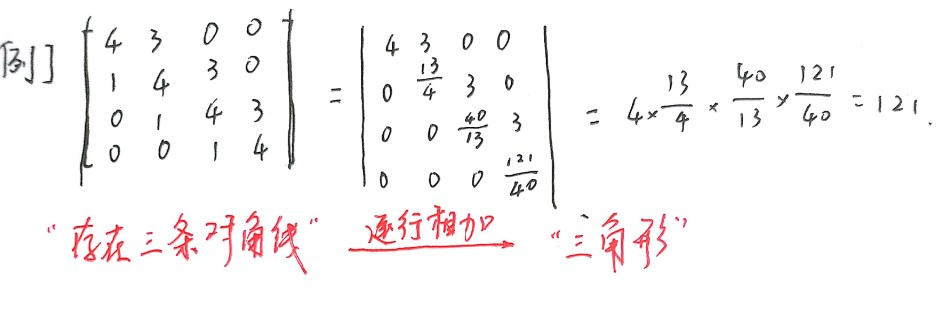
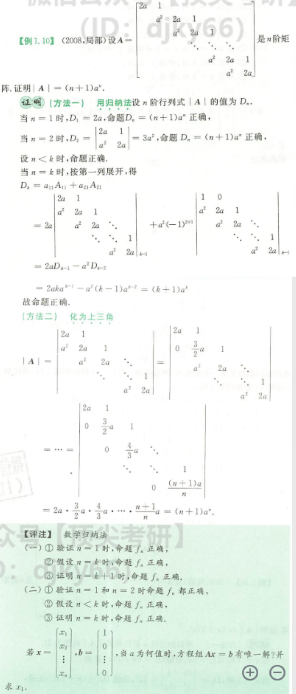
抽象型
题型
- 行列式性质恒等变形
- 矩阵公式、法则恒等变形，E恒等变形
- 形特征值、相似
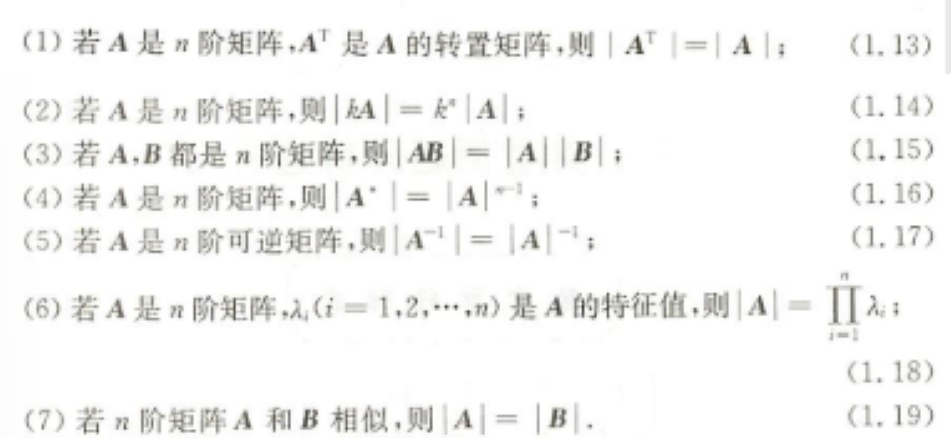
经典例题
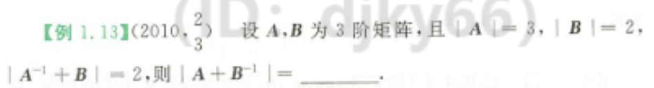
思路：利用单位矩阵恒等变形
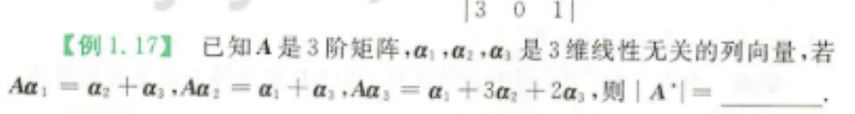
思路一：利用矩阵相似（$\alpha_1，\alpha_2，\alpha_3$无关，后面出现$A\alpha_1，A\alpha_2，A\alpha_3$想到相似）
利用乘法公式凑$PAP^{-1}=B$
思路二：用行列式性质
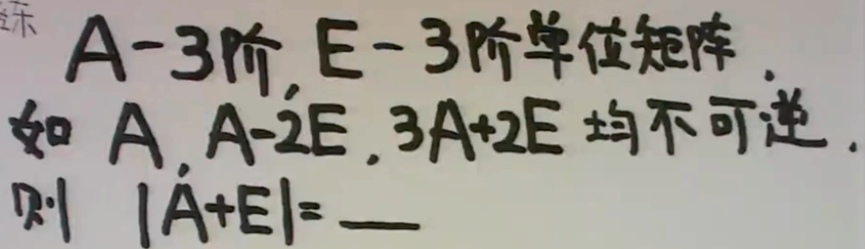
思路：“不可逆”=>“行列式为0”=>观察看到为特征值形式$|\lambda E-A|=0$，利用特征值与行列式的关系求解
应用
特征值
思路
“消0且得公因式”
例题
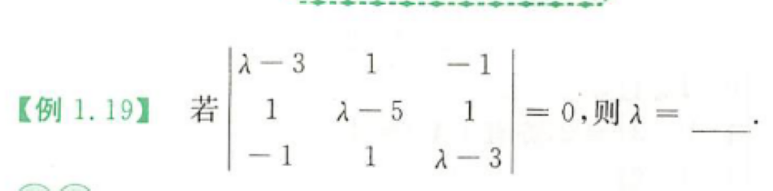
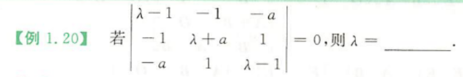
对于特征多项式应两行（或列）加加减减，至多是三行（或列）的加加减减找出 $\lambda-a$ 的公因式，然后再解一个二次方程，就可求出矩阵A的三个特征值
克拉默法则
思路
不用来解大的方程组，常用小的证明题，
- 齐次方程AX=0有非零解→ |A|=0
- 齐次方程AX=0没有非零解→ |A|≠0
经典例题

“AB=O” 👉 方程的解(B的列向量是A的解)
👉 秩 r(A)+r(B) ≤ n (n为A的列,B的行)
矩阵秩
注意点
r(A) = r 👉A中有r阶子式不为0,任何r+1阶子式(若还有)必全为0.
r(A) < r 👉A中每一个r阶子式全为0
r(A)≥r 👉A中有r阶子式不为0.(能确定r的范围)
A ≠ O 👉 r|A| ≥ 1
A是n阶,
- r(A) = n 👉 |A|≠0👉A可逆
- r(A) < n 👉 |A| = 0👉A不可逆
A是m×n矩阵,则r(A)≤min(m,n)
“三阶矩阵r(A)=2” → |A|=0
A — m×n , B — n×s ※
r(AB) ≤ min { r(A), r(B) }
- 若A可逆，👉 r(AB)=r(BA)=r(B)
- 若A列满秩(r(A)=n)，👉 r(AB)=r(B)
证 |A| = 0 ？
构思一：证Ax=0有非零解(克拉默法则)
构思二：假设|A|≠0，用$A^{-1}$ 找出矛盾
构思三：证明 r(A) < n
构思四：$|A|= \Pi \lambda_i$ (特征值)
构思五：证明 $|A|$ = $|A|^{-1}$
经典例题
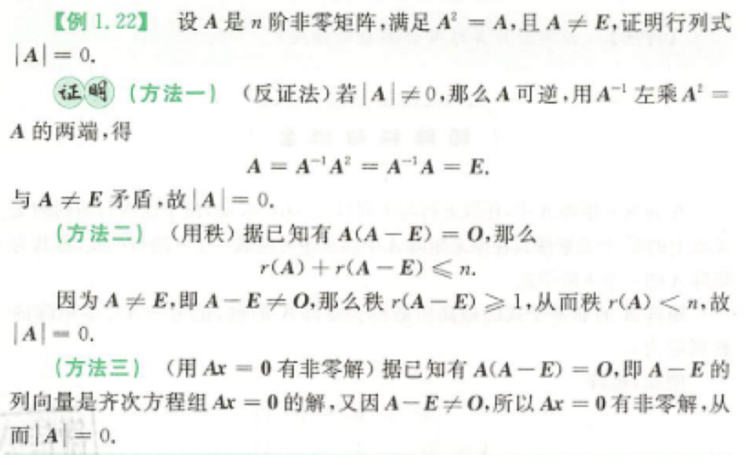
这里又用到了 AB=O 型！！！！

解法一：用秩
r(AB) ≤ r(A) ≤ n < m
∵ AB为m阶
故，|AB| = 0 ( r(AB) < m )
解法二：用克拉默法则
构造两个齐次方程组，如下：
ABX = 0 (1)
BX = 0 (2)
显然，(2)的解一定为(1)的解 ※
又∵ B为n×m，且 n < m
∴ BX=0 一定有非零解
故，ABX = 0 一定有非零解
|AB|=0
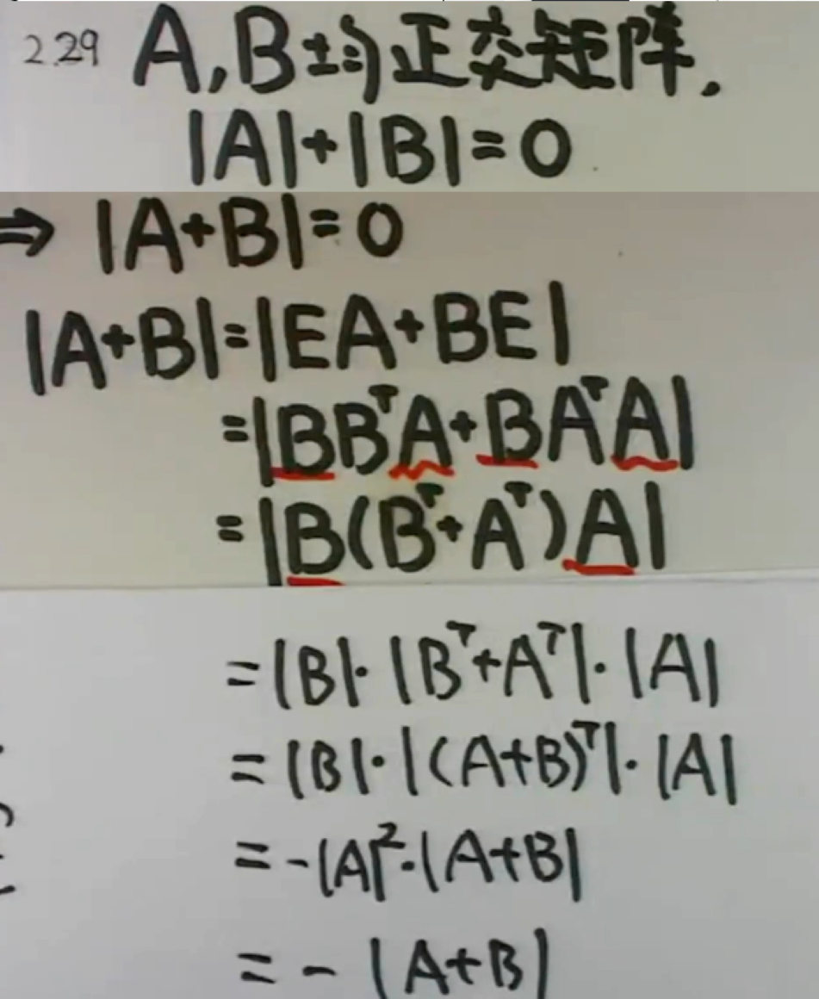
用到$|A|=|A|^{-1} \rightarrow |A|=0$
代数余子式
定理
i≠j时，有：
$a_{i1}A_{j1}+a_{i2}A_{j2}+…+a_{in}A_{jn}=0$
$a_{1j}A_{1k}+a_{2j}A_{2k}+…+a_{nj}A_{nk}=0$
某一行元素与另一行对应余子式乘积和为0（第j行与第i行的元素完全相同，故行列式为0）
$A_{ij}$元素大小与$a_{ij}$无关，可构造以$A_{ij}$元素系数为一行(列)的向量，则该构造的向量按$A_{ij}$元素系数一行(列)的展开的行列式的值就为$\sum A_{ij}$的值
例题
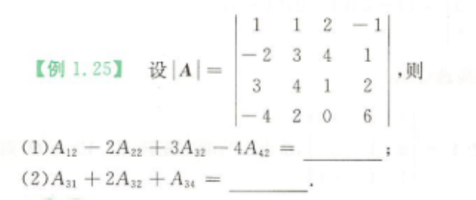
解答如下：
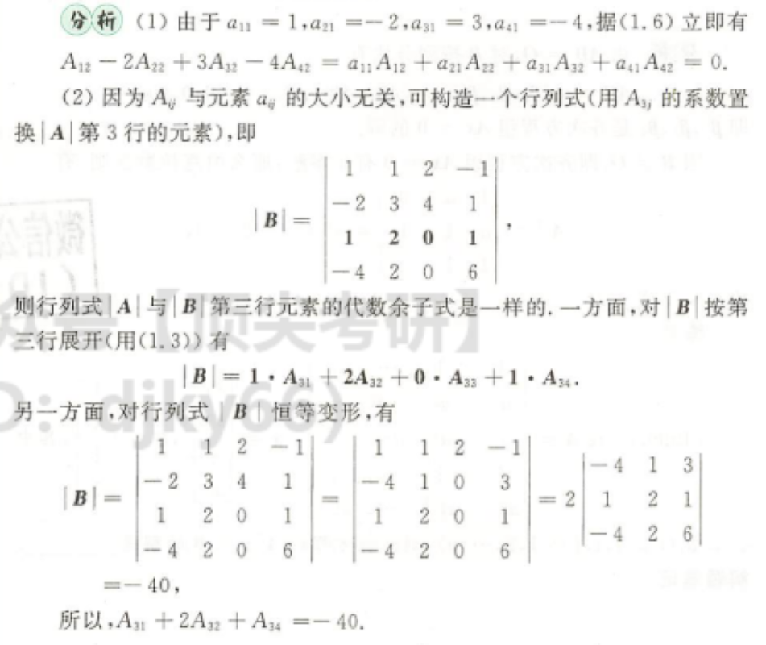
真题
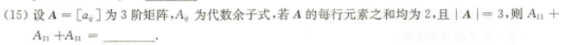
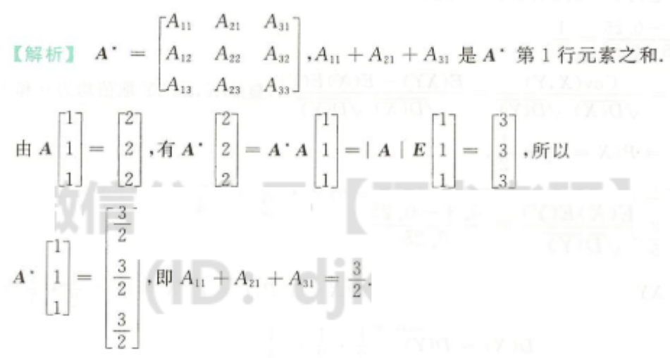